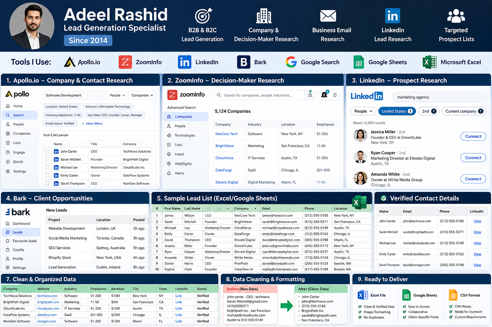

🎯
B2B & B2C Lead Research
Identify relevant businesses or audience segments using agreed targeting criteria and public business information.
I’m Adeel Rashid, a lead generation and email marketing professional focused on targeted prospect research, contact data organization, data quality, and practical outreach workflows. My professional journey began in 2014.

Illustrative portfolio visual. Sample data is fictional and included to demonstrate workflow and presentation.
I help teams build structured prospect lists and prepare cleaner, more useful data for sales and marketing. I value relevance, accuracy, clear documentation, and responsible outreach.
Flexible support for teams that need prospect research and better-organized outreach operations.
Identify relevant businesses or audience segments using agreed targeting criteria and public business information.
Build structured prospect lists with available company, role, website, and business contact details.
Organize spreadsheets, normalize fields, identify duplicates, and flag records that need review.
Prepare lists for verification and separate results by status, while avoiding guarantees about deliverability.
Help prepare relevant, personalized outreach copy and sensible follow-up sequences.
Keep prospect data organized in sheets or CRM systems so teams can track progress clearly.
Tools are selected according to project requirements, access, budget, and permitted use.
These examples demonstrate presentation and workflow. They do not claim client results or use real prospect data.
The downloadable project contains fictional sample records to show the spreadsheet structure. Replace these with authorized project data before using the workflow.
Send a short message with your target industry, location, required fields, and timeline.